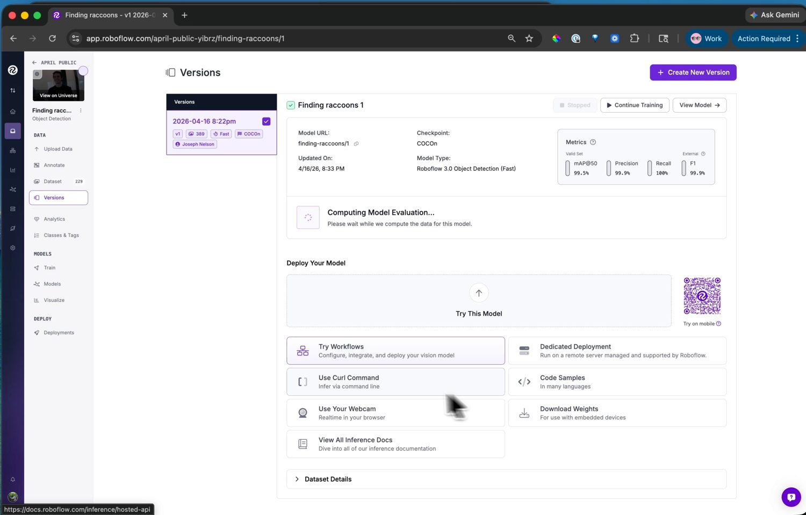

13.7.4. 训练模型¶
有了带标签的数据集之后，训练就是 Train 页面上的一个引导式流程：锁定一个数据集版本，挑选一种架构，然后把训练任务交给 Roboflow 的服务器。
13.7.4.1. 数据集版本¶
在训练之前，Roboflow 会构建一个数据集 version——即图像的一个冻结快照，外加在导入过程中应用的两种变换：
Preprocessing 会将每张图像调整为模型训练所用的分辨率。请将该分辨率保持得较小：摄像头运行的是小型模型，以适中分辨率训练的检测器既能装入摄像头的内存，运行速度也快。
Augmentation 通过扰动原始图像来合成额外的训练图像——翻转、亮度和曝光偏移、模糊、噪声。每种增强都在教模型容忍它将在摄像头上遇到的某种真实变化，从而让一个手工采集的小型数据集的价值大幅延展。

一个增强预览：每个选项在你将其提交到版本之前，都会展示它对样本图像所做的处理。¶
让增强与摄像头实际会遇到的变化相匹配。亮度和曝光是值得保留的——光照在不断变化。跳过那些在你的场景中从不发生的增强；固定安装的摄像头永远不会遇到垂直翻转，因此翻转增强只会稀释数据集。
13.7.4.2. 选择架构¶
接下来，挑选模型架构。Roboflow 提供了多种架构，每种都带有一个在准确率与速度之间权衡的尺寸选择器。

架构选择——每种都带有一个在准确率与推理速度之间权衡的尺寸选择器。¶
对于摄像头，请选择 Roboflow 3.0。它底层采用的是 YOLOv8，而摄像头随附了一个 YOLOv8 后处理器，位于 ml.postprocessing.ultralytics 中，因此它的输出无需你这边添加任何额外代码即可解码。选择 Fast 尺寸——它既能装入摄像头的内存，也能以可用的帧率运行。
13.7.4.3. 运行训练¶
启动训练任务，训练便会在 Roboflow 的服务器上进行——对于小型数据集通常远不到一小时，完成后会有一封电子邮件通知。随后版本页面会显示训练图表和准确率指标：mAP、精确率和召回率。
{kind=link}

已训练的模型及其准确率指标。从这里出发，Visualize 页面还能在测试图像或网络摄像头上运行它，以进行快速的合理性检查。¶
如果数字表现良好，模型便已准备好部署。如果不好，解决办法通常是更多或更多样的数据——再录制一段片段，为其打标签，然后训练一个新版本。